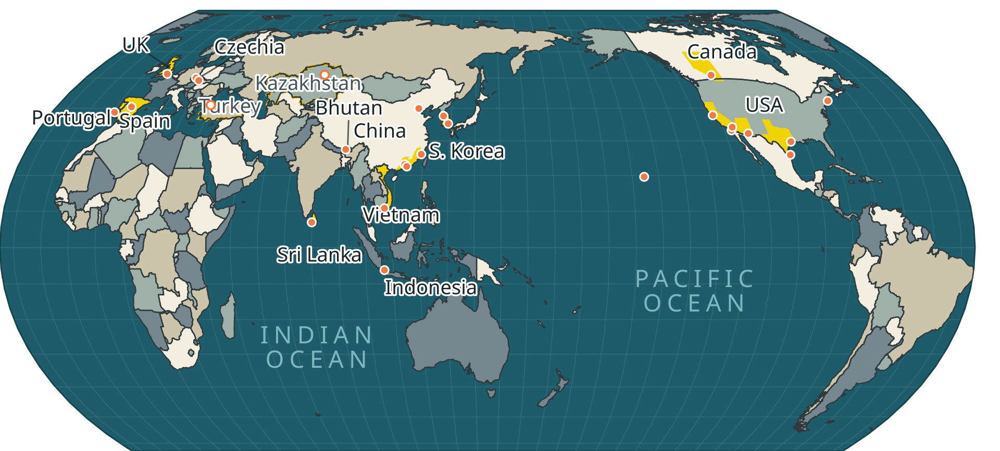

An 85″ TV is about 1.88 m wide. Seen from the back of a 30-foot room (9.1 m) it subtends the same angle as a 125 px-wide image seen from a normal 60 cm desk distance. Shrinking the map is optically identical to walking away from it, so these are honest previews — look at them from where you normally sit, not up close. Rule of thumb used for the type sizes: a capital letter needs roughly 15 arcminutes to be read comfortably at a glance, which is about 40 mm on that screen, or 3.7% of its height. The country labels are deliberately under that: they are for you and the front of the room. What has to survive the back row is the yellow and the shapes.
Equal Earth projection centred on 145.5°E, Antarctica dropped, frame cropped
to 58°S–84°N. The central meridian is 145.5 rather than a round 145 so the
map's seam falls at 34.5°W, just east of Brazil's easternmost point — at
35°W the Brazilian nose was clipped off to the far edge of the map as a
stray speck. Greenland still straddles the seam and is drawn split, which is
what a Pacific-centred world map does; the build reports it rather than
quietly trimming a third of Greenland away.
Country fills are a 4-colouring computed from shared borders, so no two
neighbours ever share a fill; the four fills are spread on lightness because
hue is what a washed-out screen loses first. Highlights are drawn with no
border of their own and no admin-1 boundary appears anywhere, so a
highlighted state reads as a patch inside its country rather than as a new
country. Rebuild with cd design/atlas && npm install && npm run build;
edit design/atlas/places.json to change what is labelled or highlighted.